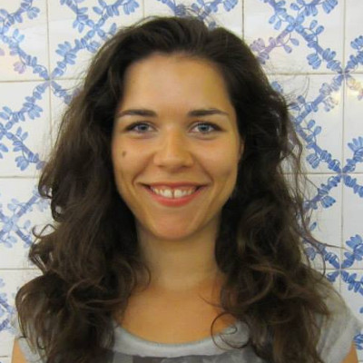
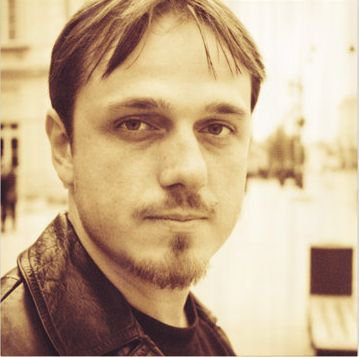

Warsztaty
Ale o co właściwie chodzi?
Uczymy JavaScriptu
Organizujemy warsztaty z programowania w języku JavaScript, z niezbędnym dodatkiem HTML i CSS.
Dlaczego właśnie JS? To proste: nie ma obecnie popularniejszego i bardziej niezbędnego języka programowania. Bez JavaScriptu strony www byłyby pozbawione m.in. elementów interaktywnych. Co więcej, statystyki GitHuba potwierdzają – JavaScript to obecnie język nr 1 w sieci, a zapotrzebowanie na programistki i programistów JS rośnie.
Więcej kobiet w branży IT
Chcemy przyciągniąć do kodowania kobiety, ponieważ - mimo wielu inicjatyw i zachęt -
wciąż stanowią one niewielki odsetek zatrudnionych w branży IT.
W środowisku javascriptowym nie było do tej pory inicjatywy dedykowanej kobietom -
podobnej do Rails Girls (dla programistek Ruby on Rails)
czy Django Girls (dla programistek Pythona).
Wypełniamy tę lukę, a dla ułatwienia branżowego debiutu oferujemy zajęcia całkiem za darmo.
girls.js #1
19 listopada 2016r. odbyły się nasze pierwsze, próbne warsztaty dla 9 uczestniczek.
Kilkadziesiąt kubków kawy i wszechobecne żółte kaczuszki. A atmosfera? Oceńcie sami
i obejrzyjcie fotorelację z tego dnia. Dziękujemy sponsorom za wsparcie i wiarę
w nasz pomysł, a warsztatowiczkom - za otwartość, perfekcyjne przygotowanie
i maksymalną koncentrację. Nauczyliśmy się od Was co najmniej tyle samo, co Wy od nas!
Materiały
Licencja CC-BY-NC-SA
Jak stworzyć galerię zdjęć na swojej stronie, poznając przy tym podstawy JavaScriptu? Uczestniczki pierwszej edycji girls.js już to wiedzą.
...czyli jak zaimplementować na stronie informację o ciasteczkach.
Podstawowe koncepty programistyczne w wydaniu javascriptowym.
Zespół
Kto odpowiada za całe zamieszanie
Maria Górska
Absolwentka informatyki. Zawodowo pomaga stawiać sklepy w Internecie,
bo cieszy ją praca z ludźmi. Uwielbia uczyć, upraszczać pozornie skomplikowane
sprawy, oraz tłumaczyć z technicznego na ludzkie (i vice versa). W wolnych
chwilach gapi się w gwiazdy, pochłania książki i pisze na
blogu.
Magda Niedźwiecka
Z wykształcenia dziennikarka, absolwentka Uniwersytetu Warszawskiego, z zawodu -
pr-owiec, z zamiłowania wolny duch. Ma za sobą pierwsze próby programowania
(m.in. podczas warsztatów
Rails Girls) i uważa je
za najlepszą przygodę intelektualną w życiu. Prywatnie mama sześcioletniej Mani i
działaczka ngo.
Daria Zychowicz

Socjolożka z wykształcenia, z zawodu programistka front-end. Uczestniczyła
w kilku warsztatach podobnych do girls.js i jest żywym dowodem na to, że takie warsztaty działają,
i że się da. Po pracy (wbrew pozorom ;) nie koduje, ale udziela się społecznie w
kooperatywie, w ogrodzie społecznościowym, promuje weganizm i podróżuje.
Basia Kocimowska
Ukończyła informatykę. Zawodowo zajmuje się programowaniem oraz edukowaniem w korporacji z branży elektroniki użytkowej. Lubi podróżować, śpiewa w chórze, fotografuje Świdermajery, kwiatki i
parowozy. Entuzjastka piw rzemieślniczych.
Ola Rutkowska

Kobieta – ogarniaczka. Uwielbia, gdy coś dzieje i uwielbia działać. Od lat Szefowa
Sztabu Wielkiej Orkiestry Świątecznej Pomocy w Żyrardowie i wolontariuszka
Pokojowego Patrolu, od ponad roku – prezeska Qltur Generatora – lokalnego stowarzyszenia działającego w obszarze kultury i edukacji. Zakochana w mediach
społecznościowych i muzyce rockowej. Prywatnie utożsamia się z lamami.
Michał Jarosz
Absolwent automatyki przemysłowej – szczęśliwym zrządzeniem losu został programistą webowym. Przebiegł kilka maratonów, a teraz szuka mniej wyczerpującego hobby. Zbiera na bilet na Marsa.
Kacper Kula
Kawa, podróże, JavaScript - to jego główne pasje. Na codzień pracuje jako Senior
JavaScript developer w SwingDevelopment, a w wolnych chwilach sięga po książkę
lub dobry film. Poza siecią można spotkać go na rowerze lub w lokalnej kawiarni.
Paweł Pruszkowski

Inżynier oprogramowania z 16-letnim doświadczeniem, specjalista i miłośnik JavaScriptu,
z zacięciem do dzielenia się wiedzą. Mentor podczas pierwszej edycji programu
Learn IT, Girl.
Główne hobby: zabawa z sześcioletnią córką.
Piotr Kosiński
Zaczynał jako jednoosobowy dział IT w małej firmie, potem programował w agencji interaktywnej, teraz programuje i zarządza w e-commerce. Stara się tworzyć rozwiązania, a nie szukać problemów. Za najlepszy sposób nauki uważa praktykę. Lubi to co robi i robi to co lubi. Dużo radości daje mu praca z ludźmi i tworzenie rozwiązań, z których ktoś korzysta. W wolnych chwilach i w komunikacji miejskiej czyta.
Artur Siery
Front End Engineer od 9 lat. Absolwent Wydziału Fizyki Politechniki Warszawskiej.
Prywatnie miłośnik biegów dlugodystansowych, muzyki gitarowej oraz kompozytor samouk.
Amator dobrej pizzy 🍕 i kostek rubika.
Żółta Kaczuszka
Szefowa zespołu. Doradczyni z wieloletnim stażem, absolwentka kursów coachingowych.
Prywatnie małomówna, ale zawsze chętna do wysłuchiwania innych. Z jej usług można
skorzystać tutaj.